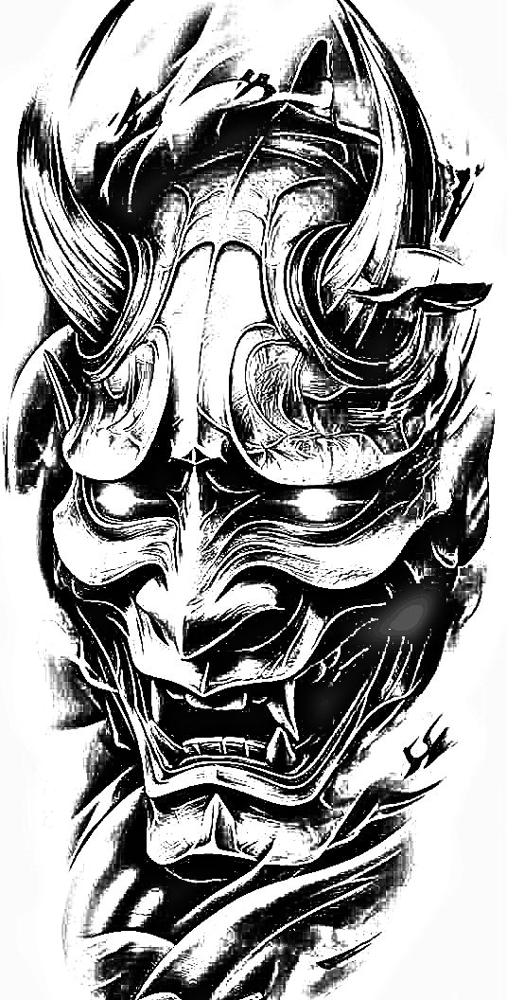
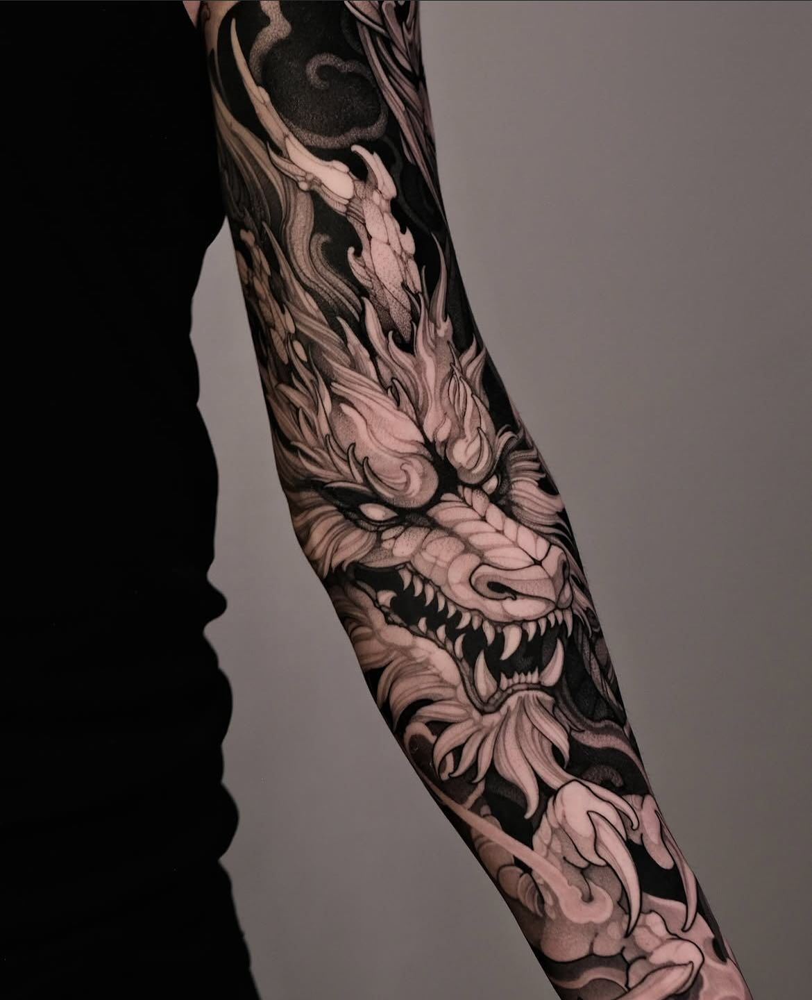
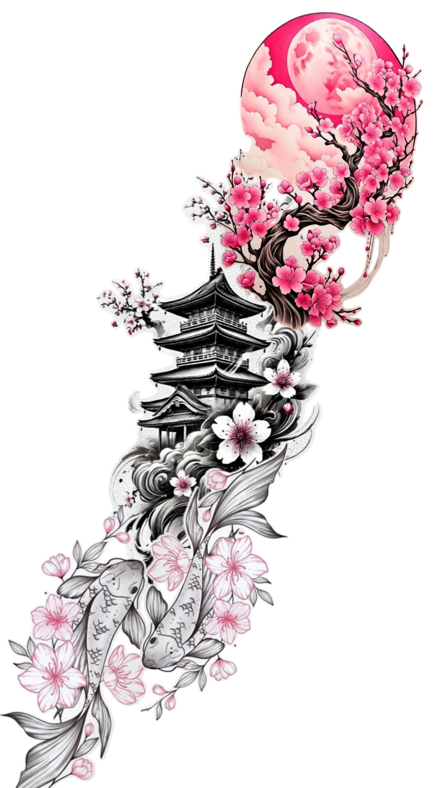
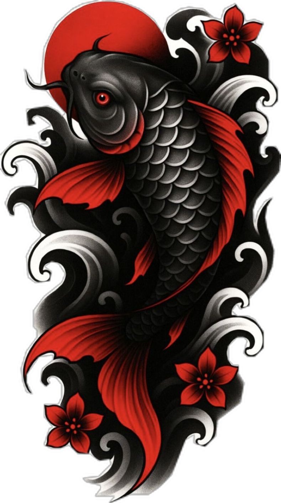
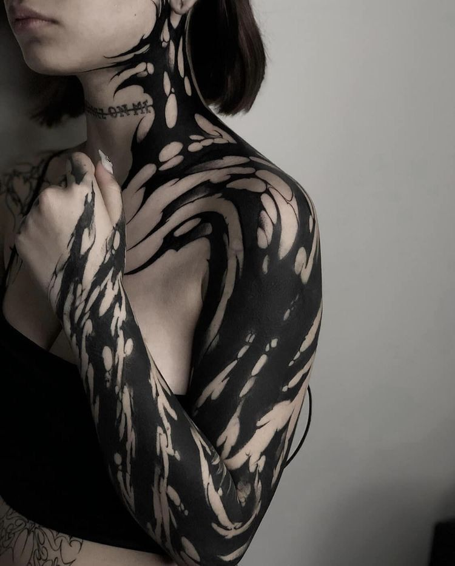
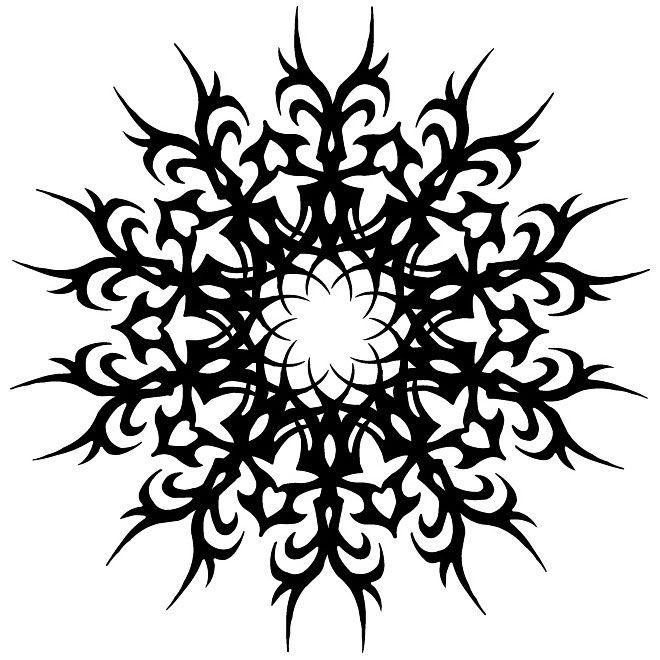
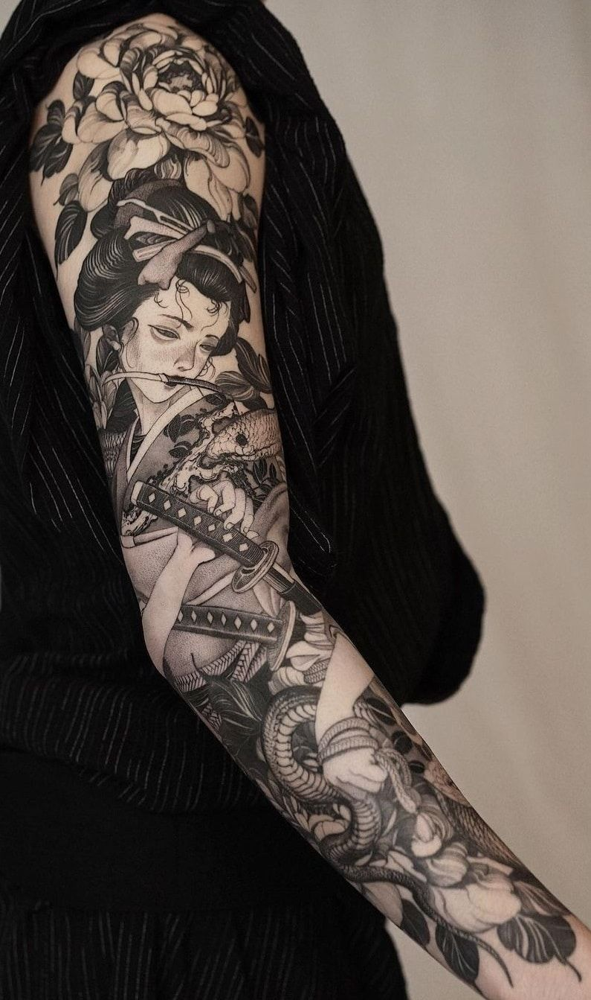
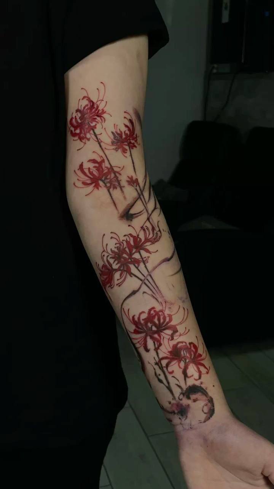

PORTAFOLIO
TRABAJO RECIENTE


Cada diseño cuenta una historia. Onis imponentes, dragones que fluyen con poder, flores de cerezo que evocan lo efímero de la vida y patrones ornamentales cargados de simbolismo. Todo tallado en la piel con la precisión, disciplina y respeto del arte tradicional japonés.
VER ESTILOS







Tu carrito está vacío